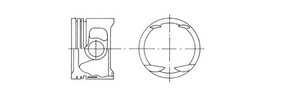
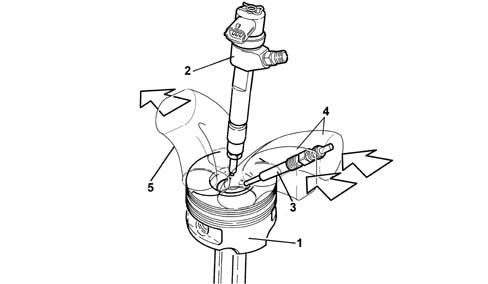

1028H pistons and connecting rods
- Path
- Descriptions > 10 ENGINE > 1028 PISTONS AND CONNECTING RODS > 1028H pistons and connecting rods
- Kind
- system description
- Applies to
- engines: 1.6 TS, 2.0 TS, 1.9 JTD 8V, 1.9 JTD 16V; all production periods
- Interactive page
- https://sloeber94.github.io/elrnDB-a147/en/#/3022410
Applies to: engines: 1.6 TS; all production periods; only with equipment: 120 CV
OPERATION
Connecting rods
The connecting rods are made from hardended and tempered steel, with a copper bush (1) fitted for matching with the gudgeon pin (2).
The floating gudgeon pins are secured by two circlips (3) seated in specific grooves in the piston skirts.

Pistons
The aluminium-silicon alloy pistons with autothermic inserts (1) are graded into three sizes; to ensure correct assembly, an arrow is stamped on the crown to show the direction of rotation of the engine.
The piston crown is concave and has four notches to prevent interference with the valve heads.

The piston crown is concave and does not have four notches because there is no interference with the valve heads.
Applies to: engines: 2.0 TS; all production periods
OPERATION
Connecting rods
The connecting rods are made from hardended and tempered steel, with a copper bush (1) fitted for matching with the gudgeon pin (2).
The floating gudgeon pins are secured by two circlips (3) seated in specific grooves in the piston skirts.
Pistons
The aluminium-silicon alloy pistons with autothermic inserts (1) are graded into three sizes; to ensure correct assembly, an arrow is stamped on the crown to show the direction of rotation of the engine.
The piston crown is concave and has four notches to prevent interference with the valve heads.
Applies to: engines: 1.9 JTD 8V; all production periods
CONSTRUCTION FEATURES
CONNECTING RODS
The connecting rods are made from hardended and tempered steel, with a copper bush (1) fitted for matching with the gudgeon pin (2).
The floating gudgeon pins are secured by two circlips (3) seated in specific grooves in the piston skirts.

PISTONS
The light aluminium-silicon alloy pistons with autothermic inserts are graded in three sizes.
The 'OMEGA' combustion chamber is located in the piston crown to improve combustion.
Two copper alloy bushes are used for attachment to the gudgeon pin.

1 - Piston 2 - Injector 3 - Heater plug 4 - Air inlet 5 - Exhaust gas outlet
Applies to: engines: 1.9 JTD 16V; all production periods
CONSTRUCTION FEATURES
CONNECTING RODS
The connecting rods are made from hardended and tempered steel, with a copper bush (1) fitted for matching with the gudgeon pin (2).
The floating gudgeon pins are secured by two circlips (3) seated in specific grooves in the piston skirts.

PISTONS
The light aluminium silicon alloy pistons with autothermic inserts are graded in three sizes.
The 'OMEGA' combustion chamber is located in the piston crown to improve combustion.
The piston contains a duct through which the oil sent by the jet flows, ensuring improved piston cooling.
Two copper alloy bushes are used for attachment to the gudgeon pin.

1 - Piston 2 - Injector 3 - Heater plug 4 - Air inlet 5 - Exhaust gas outlet